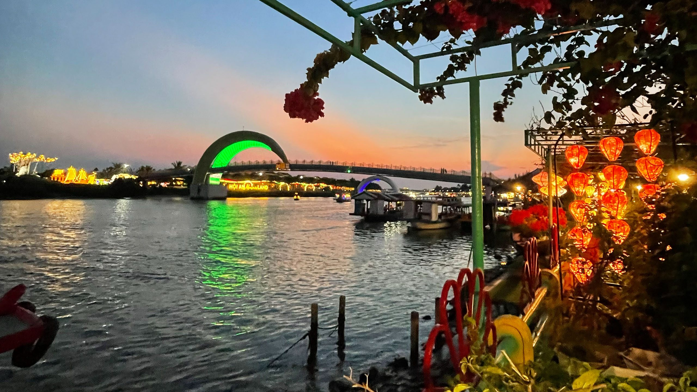
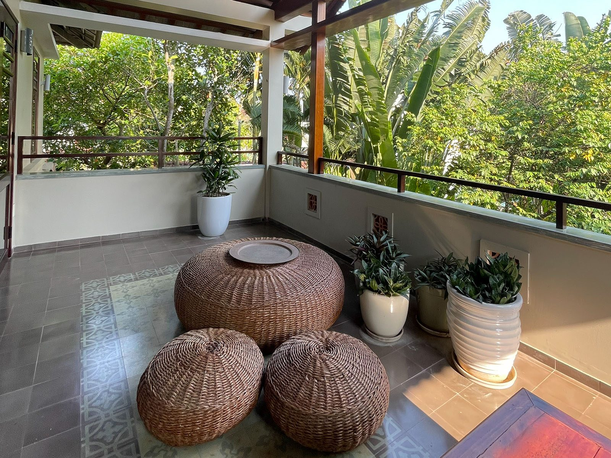
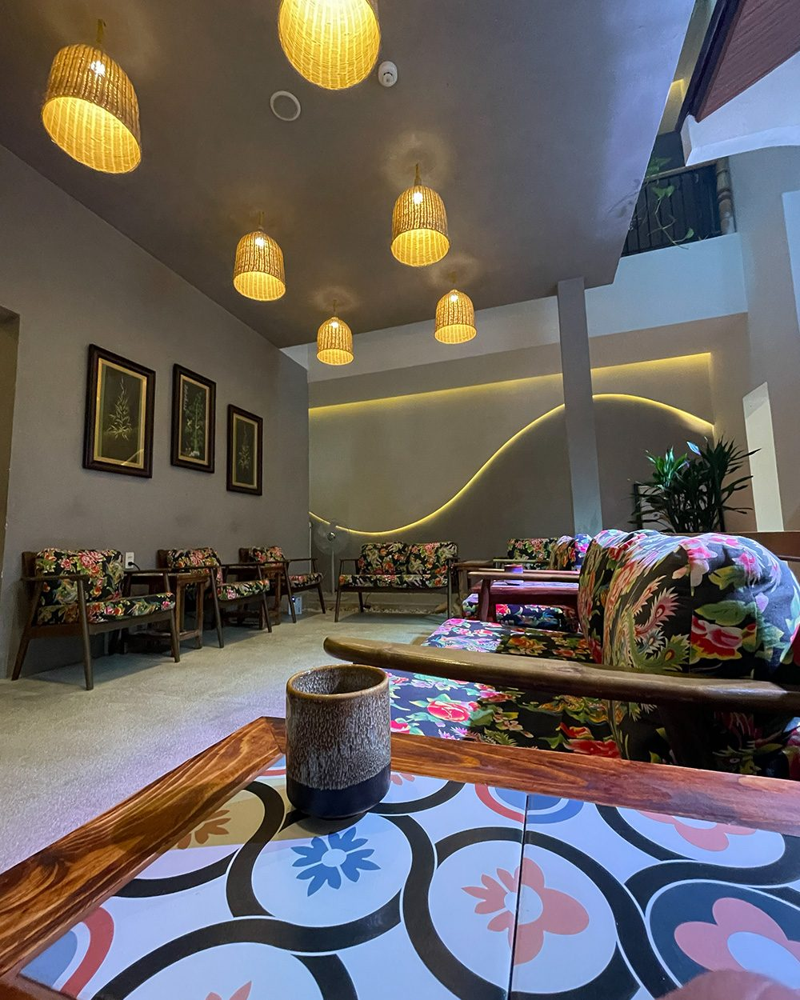
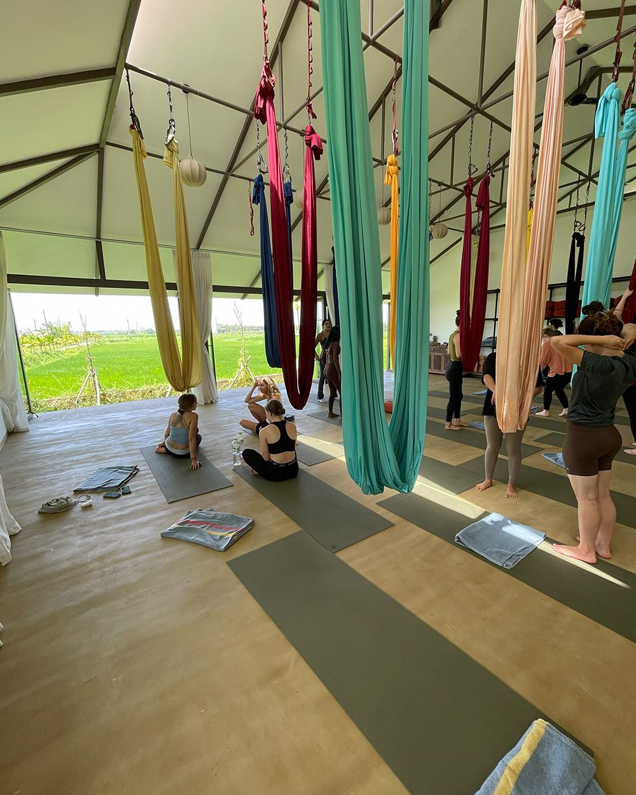
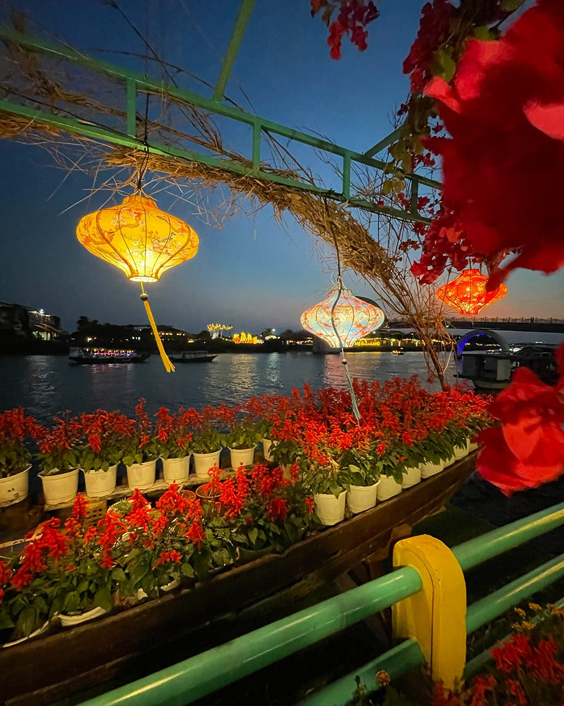
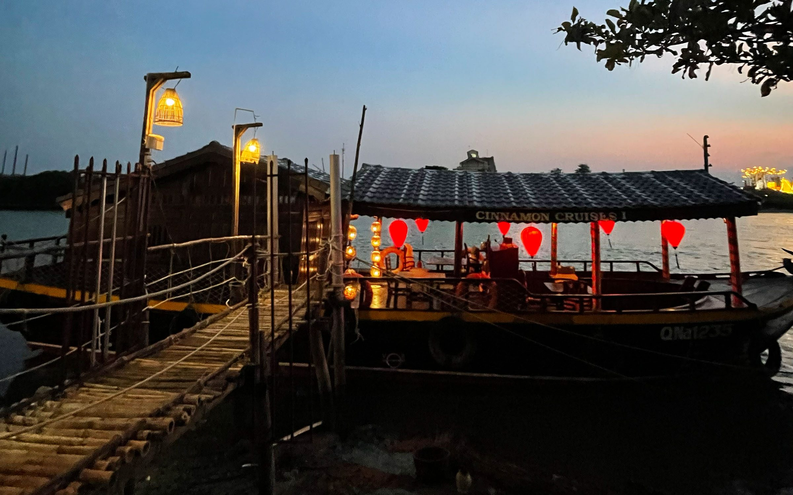

C.U.D. Experience
Hoi An Experience
Powrót do Prostoty
Zgłoś się na ten wyjazd01 — Idea
A gdyby robić mniej?
Jedenaście dni w Hoi An, by zwolnić, oddychać głębiej i wrócić do tego, co naprawdę ważne. Podróż przez lokalne życie, wspólne chwile i ciche poranki, które nie wymagają od Ciebie niczego prócz obecności.
02 — Podróż
Inny rodzaj podróży.
Inna wersja Ciebie.
Zwolnij
Daj sobie przestrzeń.
Odkrywaj
Autentyczne miejsca i lokalne życie.
Buduj Relacje
Wartościowi ludzie i rozmowy.
Smakuj
Lokalne smaki i wspólne stoły.
Wróć
Z większą jasnością niż w dniu przyjazdu.
03 — Doświadczenie
Coś więcej niż miejsce docelowe.
To doświadczenie.
Każdy dzień jest starannie zaplanowany, by przybliżyć Cię do serca Wietnamu — jego ludzi, kultury, piękna — i Twojego własnego rytmu.
Lokalna Kultura
Tradycje przekazywane z pokolenia na pokolenie.
Natura i Ruch
Pola ryżowe, rzeki i ciche szlaki.
Autentyczna Kuchnia
Wspólne stoły, lokalne smaki.
Wartościowe Chwile
Dni zbudowane na relacjach, nie na pośpiechu.
Czas dla Siebie
Przestrzeń, by po prostu być.
Pełny plan podróży poznasz po akceptacji zgłoszenia
Wierzymy, że niektóre rzeczy nabierają większej wartości, gdy pozostają piękną niespodzianką. Niektóre rzeczy najlepiej odkrywać dopiero na miejscu.

04 — Miejsce
Spokojna oaza blisko serca Hoi An.
Naszym domem na te jedenaście dni jest piękna oaza otoczona naturą, zaprojektowana z myślą o odpoczynku, relacjach i cichej inspiracji — wystarczająco blisko, by wybrać się na spacer do starego miasta, wystarczająco daleko, by usłyszeć poranki.
05 — Dzień z Podróży
Poranki, które są jak prezent.
Dni, które płyną naturalnie.
Noce, które zapamiętasz.
Każdy dzień znajduje własną równowagę między odkrywaniem, relacjami, odpoczynkiem i prostą przyjemnością. Nie chodzi o robienie więcej. Chodzi o odczuwanie więcej.



Plan dnia wkrótce
Pełny rytm poszczególnych dni podróży udostępnimy bliżej terminu wyjazdu.
06 — Co Jest Wliczone
Wszystko, czego potrzebujesz.
Nic ponad to.
- Zakwaterowanie w prywatnej oazie
- Wellness i relaks
- Codzienne śniadania
- Lokalne doświadczenia kulturowe
- Wybrane obiady i kolacje
- Pudełko powitalne C.U.D.
- Starannie wyselekcjonowane atrakcje
- Wsparcie przed i w trakcie wyjazdu
- Prywatne transfery
07 — Dla Kogo
Dla tych, którzy szukają czegoś więcej niż wyjazdu.
- Dla osób, które chcą podróżować ze świadomym celem.
- Dla osób, które cenią relacje bardziej niż tłumy.
- Dla osób otwartych na nowe doświadczenia.
- Dla osób gotowych zwolnić i być tu i teraz.
08 — Inwestycja
Inwestycja w siebie.
Bo najcenniejsze rzeczy w życiu to nie rzeczy.
Szczegóły inwestycji wkrótce
Pełne informacje o cenie i płatności prześlemy po otrzymaniu Twojego zgłoszenia.
09 — Zgłoszenie
Podróż zaczyna się od jednego prostego kroku.
Zgłoszenia są już otwarte. Liczba miejsc jest ograniczona, by zachować kameralny i świadomy charakter wyjazdu.
Zgłoś się mailowo
Powrót do Prostoty.
Może właśnie tego wszyscy teraz najbardziej potrzebujemy.